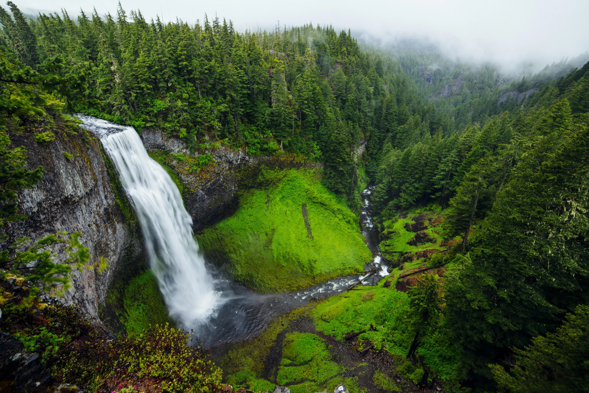

Ejercicio 1
1. Paisaje de montaña
2. Paisaje de playa
3. Paisaje de bosque

Ejercicio 3 Semántica y Accesibilidad WCAG 2.2
Evolución de la tasa de paro.
2022: 15 %. 2023: 12 %. 2024: 10 %.
Botón para realizar una búsqueda.
Separador decorativo.